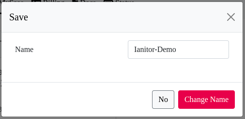

Qu'est-ce que Ianitor
Ianitor est un service de gestion de portes et portail à distance.
Composition de Ianitor
Le service Iantor est composé d'une partie logicielle (celle visible sur votre ecran) et une partie "hardware".
La partie hardware
c'est un petit boitier qui permet de simuler l'appui sur un bouton.
En connectant ce boitier à un appareil, il est possible de le controler.
Ainsi, vous pouvez ouvrir un portail, une porte, baisser des rideaux, allumer une lumière...
Pour ceux qui n'ont pas accès à l'appareil mais qui ont une télécommande et qui sont filous, nous dédions le paragraphe "pirate box"
La partie logicielle
C'est celle que vous avez sur vos écrans et qui, une fois configurée, permet de contrôler vos appareils
Organisation du logiciel
En quoi est-ce important?
Simplement par ce que ce sont des professionnels du domaine qui gèrent la sécurité, la gestion des abonnements et s'assurent du bon déploiment de votre instance.
Il reste que Ianitor est responsable du bon fonctionnement de son application et de sa sécurité interne.
Dans votre processus d'inscription, vous aurez donc un compte chez saashup (avec une authentification par le biais d'un prestataire de confiance auth0) qui vous permet de faire votre gestion d'abonnements. puis un autre compte dans votre instance de l'application Ianitor qui vous permettra de gérer vos portes et portails.
Utiliser Ianitor
Choisir le matériel et créer son portier Ianitor
Choisir son portier
les portiers
module esp32 Wroom + relais
esp 32 testé: https://www.amazon.fr/gp/product/B09ZDHNW9L/ref=ppx_yo_dt_b_search_asin_title?ie=UTF8&psc=1 (encore non testé) https://fr.aliexpress.com/item/4000296658456.html?spm=a2g0o.order_list.0.0.21ef5e5bKKaUSj&gatewayAdapt=glo2fra
relais testé: https://www.amazon.fr/gp/product/B07MY2R2ML/ref=ppx_yo_dt_b_search_asin_title?ie=UTF8&psc=1
Branchements usb.
upload firmware et fichiers littleFS
esp32 Wroom 32U parlinux
python3 /home/*USER*/.arduino15/packages/esp32/tools/esptool_py/4.2.1/esptool.py --chip esp32 --port /dev/ttyACM0 --baud 921600 --before default_reset --after hard_reset write_flash -z --flash_mode dio --flash_freq 80m --flash_size 4MB 0x1000 /tmp/arduino_build_33946/ianitordoorkeeperESP32.ino.bootloader.bin 0x8000 /tmp/arduino_build_33946/ianitordoorkeeperESP32.ino.partitions.bin 0xe000 /home/*USER*/.arduino15/packages/esp32/hardware/esp32/2.0.5/tools/partitions/boot_app0.bin 0x10000 /tmp/arduino_build_33946/ianitordoorkeeperESP32.ino.binBranchements relais http://tiptopboards.free.fr/arduino_forum/viewtopic.php?f=2&t=33 https://arduino-france.site/module-relais/
tests
module wt32 + relais
esp 32 testé:
https://fr.aliexpress.com/item/1005004621301847.html?spm=a2g0o.order_list.0.0.21ef5e5bKKaUSj&gatewayAdapt=glo2fra
relais testé:
Branchements upload
upload firmware et fichiers littleFS
Branchements relais
tests
carte esp32 avec relais inclus
esp 32 testé:
https://fr.aliexpress.com/item/1005001908732109.html?spm=a2g0o.order_list.0.0.21ef5e5bKKaUSj&gatewayAdapt=glo2fra avec l'option "ESP32-WROOM edition"
relais testé:
Branchements upload
upload firmware et fichiers littleFS
Branchements relais
tests
les modules de relais
important
- un module esp32 devkit C pourra gèrer 8 relais
- un module WT32 pourra en gèrer 4 au maximum
module 2 relais
module 4 relais
module 8 relais
Configuration logicielle des portiers (les appareils -esp32- avec les relais)
Vous avez x secondes avant qu'il essaie de se connecter à un réseau et donc arreter le sien pendant ce temps.
une fois connecté au réseau wifi du portier, allez sur un navigateur et entrez l'adresse http://192.168.4.1 sur cette page, indiquez le nom du wifi et son mot de passe ainsi que le hostname, login et mot de passe du portier.
Validez.
Le portier va se connecter à votre réseau wifi puis se connecter à votre instance Ianitor.
S'il n'y arrive pas, il proposera à nouveau son réseau wifi en alternance avec le fait d'essayer de se connecter à votre instance.
Si la led ne fonctionne pas, il sera utile de la configurer
Configuration matérielle des portiers
pirate box
Attention
La télécommande fonctionne avec une pile, il sera necessaire de la changer. vous n'avez pas d'indicateur par Ianitor de son état.
La télécommande doit être située de manière adaptée par rapport à la entenne de reception du matériel à déclancher (souvent un portail ou porte de garage) pour pouvoir être fonctionnelle.
Il est parfois necessaire de simuler un appui assez long. Ceci est configurable dans la section "administration -> porte -> [choisir le portier] -> [choisir la porte] -> temps d'action du relais en milisecondes"
Assurez-vous d'avoir l'accord du propriétaire ou du syndic des lieux: les références et les "mouvements" d'une télécommande sont connus et l'utilisation anormale d'une télécommande par un utilisateur peut entrainer un découplage de sa télécommande par le service d'entretien ou par demande du reponsable.
Vous pouvez alors alimenter votre esp32 avec une batterie externe (powerBank).
Pour des essais uniquement,(un redemarrage manuel peut etre parfois necessaire quand le portier n'est pas connecté pendant un certain temps à ianitor) utilisez le hotspot de votre téléphone:
configurez le portier pour qu'il se connecte au hotspot de votre téléphone pour lui permettre d'aller sur internet obtenir les informations necessaires!
Commander votre service Ianitor
cliquez sur "MySaas"
Vous serez alors amené à vous inscrire en cliquant sur "sign up" ou "inscription", visible en bas.
Vous avez créé un compte. Vous devez ensuite accepter de partager votre compte avec Ianitor.
Une page avec cette partie de visuel sera alors visible
cliquez sur le lien en bleu pour vous permettre d'aller configurer votre moyen de paiement.
cette page est l'interface de votre compte qui contient vos informations personnelles pour le saas et celles de paiement.
Pour pouvoir payer mensuellement votre abonnement, vous avez besoin de définir votre moyen de paiement. Actuellement, cela se fait par carte bancaire.
Cliquez sur "setup payement"
vous serez amener à remplir les champs concernant votre carte de crédit.
Vous aurez aussi probablement besoin d'autoriser par votre application de banque l'autorisation de prélèvement.
Le prestataire hébergeant notre solution est Saashup  et il s'occupe de la facturation mensuelle de vos instances.
et il s'occupe de la facturation mensuelle de vos instances.
Vous pourrez autoriser le paiement en étant pleinement rassuré.
Votre moyen de paiement est configuré
Dans le menu du haut, cliquez sur "billing".
Sur cette page, vous pouvez configurer les informations de la facture dans l'encart 'payement and invoices', avec le petit bohomme avec l'engrenage .

remplissez les informations et sauvegardez.
Puis cliquez sur "buy new instance" pour acheter votre instance.
l'engagement est mensuel, le renouvellement et son paiement mensuel sera automatique.
Vous êtes facturé en fin de mois, par nombre d'instance maximum créées.
Pour rappel, il n'y a pas de prorata au nombre de jours.
Votre instance est en cours de création
Vous recevrez un email de confirmation lorsqu'elle sera crée. rassurez vous c'est assez rapide et vous pouvez éventuellement rafraichir la page au bout d'une ou deux minutes pour voir si elle est désormais active.
dans l'attente, vous pouvez renomer votre instance par un nom plus facile à identifier.
Juste à droite du nom à côté du logo ianitor, votre souris changera d'aspect. en cliquant à ce moment, vous pourrez changer le nom.
ici, le nom saashup-ianitor-3225581026699 est remplacé par Ianitor-Demo

voici votre instance disponbile.
vous recevrez un email de la part de "support@saashup.com" vous indiquant la bonne création de votre instance.
et son contenu:
En cliquant sur le lien, vous pourrez aller la configurer.
Premier accès à votre instance Ianitor
Vous avez commandé votre abonnement et dans la page "mySaas", vous avez le lien de votre instance sous la forme "saashup-ianitor-NOMBRE.ianitordoorkeeper.com" (avec NOMBRE, un grand nombre. dans notre demonstration, le lien est: saashup-ianitor-3225581026699.ianitordoorkeeper.com)
En cliquant sur le lien, vous arrivez sur une page de ce type:
L'entreprise gestionnaire est une entreprise qui peut faire la gestion de plusieurs autres localisées à de multiples endroits.
Dans un premiers temps, il est bon de confondre l'entreprise gestionnaire et l'entreprise principale (souvent une SCI) qui est celle qui accueille dans ses locaux à une même adresse d'autres structures ou locataire.
indiquez le informations necessaires puis cliquez suivant
 entrez les informations concernant l'entreprise principale
entrez les informations concernant l'entreprise principale
cliquez suivant
entrez vos identifiants, veillez à être au moins administrateur.
 cliquez suivant
cliquez suivant
creez le portier qui permettra d'ouvrir les portes.
un portier est un appareil avec des relais qui permet de déclencher l'ouverture de portes et portails
cliquez suivant
nommez la premiere porte avec sa localisation.
cliquez creer
vous serez redirigé vers la page d'identifiants.
Vous avez commandé votre abonnement et dans la page "mySaas", vous avez le lien de votre instance sous la forme "saashup-ianitor-NOMBRE.ianitordoorkeeper.com" (avec NOMBRE, un grand nombre. dans notre demonstration, le lien est: saashup-ianitor-3225581026699.ianitordoorkeeper.com)
En cliquant sur le lien, vous arrivez sur une page de ce type:
Dans un premiers temps, il est bon de confondre l'entreprise gestionnaire et l'entreprise principale (souvent une SCI) qui est celle qui accueille dans ses locaux à une même adresse d'autres structures ou locataire. indiquez le informations necessaires puis cliquez suivant
cliquez suivant
entrez vos identifiants, veillez à être au moins administrateur.
creez le portier qui permettra d'ouvrir les portes.
un portier est un appareil avec des relais qui permet de déclencher l'ouverture de portes et portails
nommez la premiere porte avec sa localisation.
vous serez redirigé vers la page d'identifiants.
Utilisation de l'application
indiquez le login et mot de passe que vous venez d'informer et vous assurant d'avoir cliqué sur administrateur.
sur cette page, des indications par défaut ont étées inscrites, elles seront modifiables.
Dans un premier temps, allez controler l'appareil "portier" et son controle sur la première porte ou portail.
Configuration des portes
Avertissement
Sur un même portier, s'il y a plusieurs demandes d'ouverture de portes différentes, les portes s'ouvrent les unes après les autres et non pas en même temps.

Téléversez-les dans le portier Ianitor (Esp32) par la technique qui lui est adaptée: Configurations du matériel
Sur la page correspondant à l'image, veuillez vous préparer à copier les informations du portier de hostname, login, mot de passe.
une fois le téléversement effectué et réussi, informez le portier des identifiants de votre wifi et de votre instance iantior.
Configuration de la led
ayez le portier à vos côtés pour vérifier l'allumage de la led.sur la page "administration/config. portes", cliquez sur éditer le portier,
Suivant le type de portier que vous avez, préférez tester les "gpio" 2, 5, 17, 23.
Quand au clique de "test", la led s'allume puis s'éteint. Ceci signifie que le gpio adéquate est trouvé.
vous pouvez alors "mettre à jour la led du portier".
Configuration de l'inversion des relais (NC/NO)
Les relais ont des positions "NO" pour "normalement ouvert" et "NC" pour normalement fermé (closed en anglais).
Nous vous conseillons de faire les branchements sur les connecteur NC ou NO avec le fil pilote de votre porte pour que les portes soient en position fermées à la mise en tension.
Dans le cas contraire, lors de la mise en tension, toutes les portes vont se déclencher ou inversement, si le portier venait à ne plus etre alimenté, l'état de toutes les portes changera.
Toutefois, après avoir cliqué sur "editer le portier", vous pouvez choisir d'inverser l'état du relais en cliquant sur "relais inversé".
Si le fond devient vert, alors, le changement est enregistré.
Configuration d'une porte
vous pouvez configurer le nom, les commentaires, sa localisation, sa couleur de fond, la couleur de l'écriture, le temps d'action du relais
L'image doit etre enregistrée par le bouton "sauvegarder image".


Création nouvelle entreprise

remplissez les champs
Pensez à creer l'administrateur qui gérera les identifiants des employés de l'entreprise.
Double cliquez sur le nom de l'entreprise ou choissisez dans le menu du haut l'entreprise souhaitée
Dans "administration/utilisateurs", cliquez sur "nouveau"
remplissez les champs en vous assurant que vous avez bien cliqué sur "administrateur" pour que ce compte puisse gèrer les fonctions disponibles à cette entreprise.
modifier/ajouter une plaque d'immatriculation
Définitions
application
est, dans le domaine informatique, un programme (ou un ensemble logiciel) directement utilisé pour réaliser une tâche, ou un ensemble de tâches élémentaires d'un même domaine ou formant un tout Typiquement, un éditeur de texte, un navigateur web, un lecteur multimédia, un jeu vidéo, sont des applications. Les applications s'exécutent en utilisant les services du système d'exploitation pour utiliser les ressources matérielles. Application_(informatique) - wikipedia
Instance
est une entité de l'application informatique:
l'application est le programme en code informatique, l'instance vous permet de l'utiliser et elle vous appartient.
portier (ianitor)
dans cette application, il est un appareil qui permet de déclencher l'ouverture des portes.
un portier Ianitor est un appareil electronique avec un ESP32 Wroom.
temps d'action du relais
est le temps de changement d'état du relais par rapport à sa position de repos lorsqu'une demande d'ouverture est demandée.